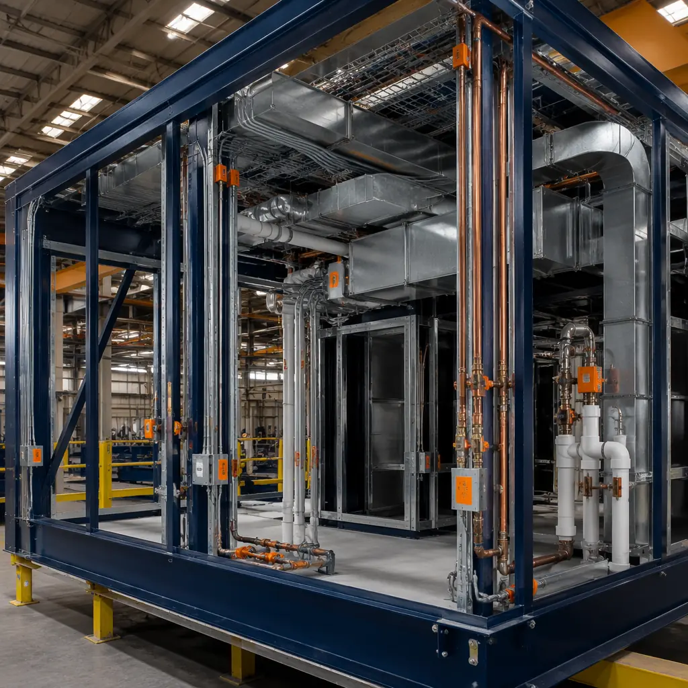
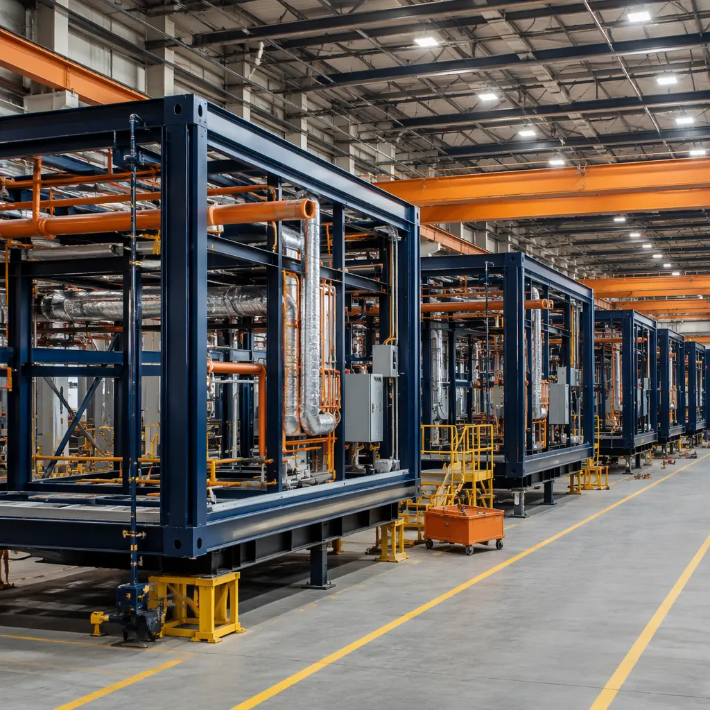
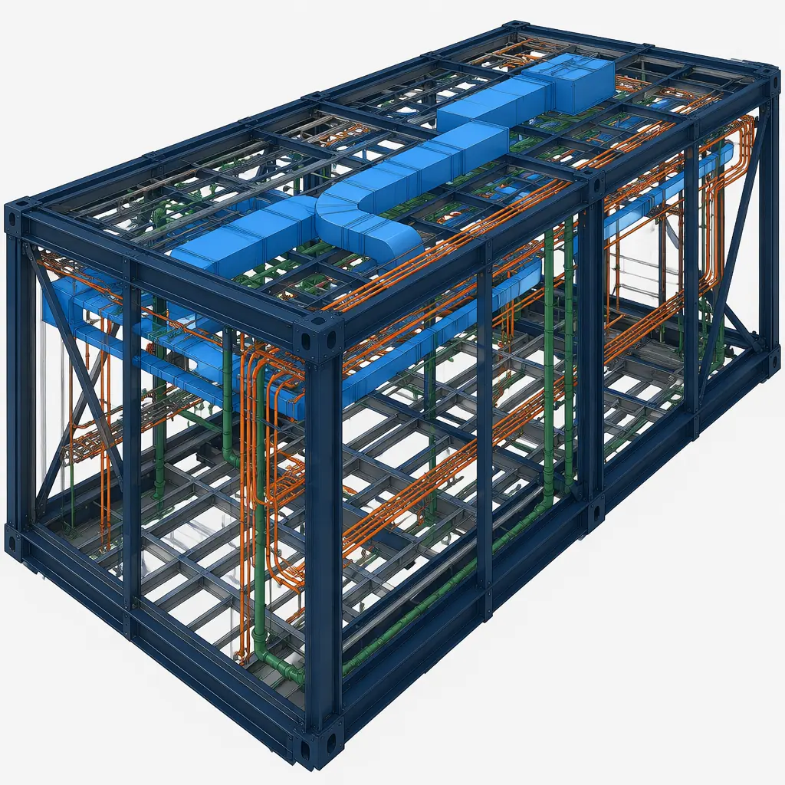
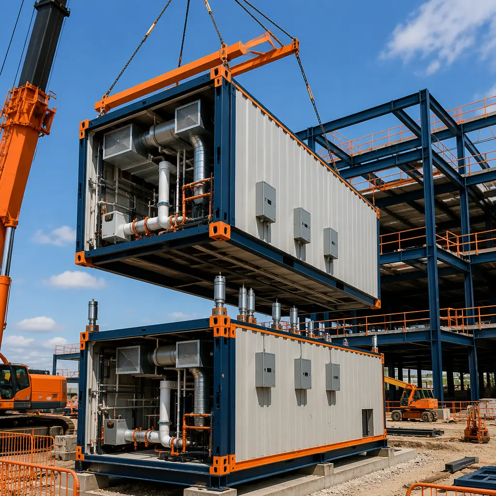

In conventional construction, MEP coordination is a source of friction that compounds at every stage of the project. The mechanical engineer designs ductwork that collides with the structural engineer's beam layout. The plumbing contractor routes a soil stack through the space the electrician planned for a panel board. The fire protection subcontractor installs sprinkler mains that block the HVAC contractor's planned diffuser locations. These clashes are discovered in the field — after the steel is erected, after the subcontractors have mobilized, and after the schedule has no float remaining. The resolution is a field-directed change: cut a hole, reroute a duct at a kinked angle, reduce a chase dimension, accept a lower ceiling height. Each field resolution degrades system performance and adds labor cost. Modular construction eliminates this dynamic by moving MEP installation into the factory, where every pipe, duct, conduit, and cable tray is coordinated in BIM before a single module is fabricated, and every system is pressure-tested, energized, and commissioned before the module leaves the production line. This article explains how modular MEP integration works across HVAC, plumbing, and electrical systems, and why the result is not just faster installation but measurably better building performance.

What MEP Integration Means in Modular Construction
In a site-built project, MEP rough-in is the most labor-intensive phase of construction. Trades work sequentially: the plumber installs waste and supply piping, the HVAC contractor hangs ductwork and sets air handlers, the electrician pulls wire and mounts panels, and the fire protection contractor runs sprinkler mains. Each trade navigates around the others' work, and each navigation decision creates a deviation from the design intent. The result is a building whose as-built MEP systems differ materially from the coordinated model, with undocumented field modifications that complicate future maintenance and renovation.
In modular construction, MEP integration is not a site activity but a factory assembly process. The module's structural frame incorporates dedicated MEP zones: ceiling plenums sized for duct crossovers, wall cavities with pre-punched stud knockouts for conduit and piping, and floor assemblies with recessed drain channels for bathroom and kitchen modules. At defined stations on the production line, each trade installs its systems against a BIM-coordinated layout that has already resolved every clash. The module cannot proceed to the next station until the current station's work is complete and inspected — a gated workflow that our deep dive on factory QC systems explains in detail.
The time impact is substantial. On a 100-unit apartment building, site-built MEP rough-in typically requires 12–16 weeks with 4–6 trades working in overlapping sequences. The same MEP scope in a modular factory is completed in 3–4 days per module, with all modules running through the production line in parallel over 8–12 weeks total. The labor hour reduction — 60–70% compared to site-built — comes from three sources: no trade stacking delays, no field rework from clashes, and the efficiency of a controlled factory environment where every tool, material, and fixture is at arm's reach.

HVAC Integration — Duct Routing, VAV Systems, and Heat Pump Installation in Module Ceiling Plenums
HVAC represents the largest spatial coordination challenge in any building. Ductwork requires cross-sectional area proportional to airflow volume, and in a site-built project, ducts compete with structural beams, plumbing risers, electrical trays, and fire sprinkler mains for limited ceiling cavity space. The result is often a compromised duct layout: flattened oval ducts where round ducts were specified, reduced cross-sections at beam crossings, and extended flexible duct runs that increase static pressure and reduce system efficiency.
In modular construction, the module ceiling plenum is designed as an integrated HVAC zone from the outset. The structural engineer sizes the plenum depth (typically 300–450mm for residential modules, 500–750mm for commercial and healthcare modules) to accommodate the specified duct cross-sections at the design airflow velocities. Duct routing is coordinated in BIM to avoid conflicts with the module's structural cross-bracing and the plumbing risers that occupy dedicated wall chases. Rigid galvanized steel ductwork is pre-fabricated in sections sized to fit within a single module, with flanged connections at module joints for field assembly. For VAV systems common in office and hotel applications, the VAV box and reheat coil are installed in the module ceiling plenum at the factory, pre-piped to the hydronic supply and return risers and pre-wired to the module's electrical panel.
Heat pump integration follows the same factory-preinstallation logic. In multi-family modular projects, individual water-source heat pumps are installed in each module's mechanical closet at the factory, with the condenser water risers pre-piped through the module's vertical service chase. The heat pump is connected to the module's supply and return ductwork, the condensate drain is tied into the module's plumbing waste stack, and the unit is wired to the module's electrical panel — all before the module leaves the factory. On site, the only HVAC work is connecting the module-to-module duct flanges, joining the condenser water riser couplings at the module joints, and tying the building-level condenser water loop to the central plant. This approach eliminates 80–90% of on-site HVAC labor compared to a conventional build.
Plumbing Integration — Riser Stacks, Bathroom Pod Connections, and Factory Pressure Testing
Plumbing in modular construction follows a stacked riser strategy: vertical service chases are aligned across modules so that when modules are stacked on site, the plumbing risers in each module align to form continuous vertical stacks. The risers themselves — typically copper or PEX for domestic water, cast iron or PVC for DWV — are pre-installed in each module's service chase, with branch connections pre-made to the module's fixtures. At the module joint, riser sections are connected using mechanical couplings (Viega ProPress for copper, no-hub couplings for cast iron) that can be made from within the module or from an adjacent access panel.
Bathroom pod plumbing represents the most complete expression of factory plumbing integration. As we detailed in our guide to prefabricated bathroom pods, every plumbing fixture in a pod — toilet, sink, shower, bathtub — is piped to four external connection points: hot water inlet, cold water inlet, waste outlet, and vent connection. The pod is flood-tested for 24 hours before leaving the factory, with the entire pod filled with 50mm of standing water to verify waterproof membrane integrity and all pipe joints pressure-tested at 1.5x working pressure per IPC requirements. This is a testing standard that is physically impossible to apply to every bathroom in a site-built project, and it is the reason pod manufacturers can offer 10–15-year leak-free warranties.
For non-pod modules, the plumbing testing protocol is equally rigorous but organized around the module's hold point schedule. Domestic water piping is pressure-tested at HP4 (MEP rough-in) at 1.5x working pressure for 2 hours. DWV piping is tested with a 3-meter water column or 35 kPa pneumatic test. Every joint, every branch connection, every fixture stub-out is verified against the production drawing before the wall cavity is insulated and closed. Test records are digitized and attached to the module's permanent quality dossier — a documentation trail that conventional construction simply cannot produce at the individual room level.
| Plumbing Test | Standard | Modular Factory | Site-Built (Typical) |
|---|---|---|---|
| Domestic water pressure test | IPC — 1.5x working pressure, 2 hrs | Every module, at HP4 | System-level only; individual branch circuits not tested |
| DWV stack test | IPC — 3m water column or 35 kPa pneumatic | Every module, at HP4 | Stack-level only, sampled |
| Bathroom flood test | Manufacturer standard — 24 hrs, 50mm water | Every pod, before factory release | Not performed; visual inspection only |
| Medical gas (where applicable) | NFPA 99 — 1.5x working pressure, 24 hrs | Every module, third-party verified | System-level, third-party verified |
| Test documentation | Per project spec | Digital record per module, GPS-tagged photos | Paper sign-off sheet, filed on site |
Electrical Integration — Busway Connections, Prewired Panels, and Smart Building Readiness
Electrical systems in modular construction follow a distributed architecture: each module contains its own electrical panel prewired to all branch circuits within that module, and the modules are interconnected through busway or feeder cable connections at the module joints. This is fundamentally different from site-built electrical installation, where a central panel board serves an entire floor and every branch circuit must be pulled from the central panel to the point of use — often through conduit runs that cross multiple rooms and require coordination with every other trade working in the ceiling cavity.
In a modular project, the module's electrical panel is mounted in a dedicated electrical closet or service chase, prewired at the factory to every outlet, switch, light fixture, and equipment connection within the module. The panel's feeder conductors are terminated at a junction box on the module exterior, and on site, the modules are interconnected using busway sections or feeder cables that plug into the junction boxes at each module joint. The building-level switchgear feeds a vertical busway riser in the service core, and each floor's modules tap off the busway through fused disconnects — an approach borrowed from data center power distribution that is increasingly used in modular multi-family and hotel construction for its speed and flexibility.
Smart building readiness is a natural byproduct of factory prewiring. Because every module's electrical system is documented in BIM, with every circuit identified, every junction box located, and every conductor gauge specified, the as-built electrical documentation is accurate to the module level — not an approximation derived from the contractor's memory of field changes. This makes the integration of building automation systems (BAS), lighting controls, energy sub-metering, and IoT sensor networks straightforward: the BAS contractor can connect to pre-labeled junction boxes at known locations with known circuit assignments, rather than tracing circuits through finished walls to determine what serves what. For projects like modular hospital construction and laboratory facilities, where the electrical documentation traceability is a regulatory requirement, this factory-wired approach satisfies documentation standards that are expensive to achieve on site.

BIM Coordination — Clash Detection Before Fabrication Begins
BIM clash detection is the single most powerful quality tool in modular MEP integration. In a conventional project, the MEP coordination process produces a coordinated model that is, at best, a theoretical ideal — the subcontractors who install the systems may or may not follow it, and the general contractor may or may not enforce it. In modular construction, the coordinated model is the production drawing: the factory floor cannot deviate from it because the module components are cut, welded, and assembled to the dimensions specified in the model. If the model says a duct passes 50mm above a plumbing riser at gridline C4, the factory builds it exactly that way, and the module's dimensional tolerance (±3mm) is an order of magnitude tighter than site-built tolerance (±25mm or more).
A typical 100-module building project will identify 200–400 clashes during BIM coordination — duct-to-beam conflicts, pipe-to-duct interferences, conduit-tray-to-sprinkler collisions — that would have been discovered in the field in a conventional build. Each clash resolved in the model costs minutes of an engineer's time; each clash resolved in the field costs hours of a subcontractor's time, plus the schedule delay while the RFI is processed, plus the performance degradation from the compromised solution. The BIM coordination process is covered comprehensively in our guide to BIM digital workflow for modular construction, but the key metric is this: modular projects that complete full BIM coordination before fabrication begin site assembly with zero MEP clashes, and the site MEP connection work is reduced to the module-to-module joint connections that were designed into the model from the start.
The coordination workflow typically follows a 5-stage process: (1) architectural model defines module geometry and spatial zones; (2) structural model defines frame, bracing, and floor/ceiling assembly depths; (3) MEP models are federated into the structural model and clash detection is run at LOD 350 — every duct, pipe, conduit, and equipment item is geometrically represented and checked against every other element; (4) clashes are resolved in weekly coordination meetings where the BIM manager facilitates trade-by-trade resolution; (5) the resolved model is frozen and issued as the production drawing set. No module enters fabrication until this process is complete, and no field MEP clash is possible because every system's spatial allocation was resolved before the first steel member was cut.
Quality Advantage — Factory QC Documentation, Pressure Test Records, and Commissioning Speed
The quality advantage of factory MEP integration extends beyond clash-free coordination to verifiable system performance. Every module's MEP systems are commissioned at the factory, not on site. The HVAC system is run through its operating sequence: fan startup, damper actuation, heating/cooling coil valve modulation, and airflow verification at each diffuser. The plumbing system is pressure-tested and flow-tested: every fixture is run, every drain is checked for flow, every shutoff valve is cycled. The electrical system is energized and verified: every outlet is tested for polarity and ground, every switch is cycled, every light fixture is illuminated, and the panel schedule is confirmed against the connected load.
This factory commissioning produces a commissioning report per module that is attached to the module's quality dossier. When the module arrives on site, the site commissioning agent does not need to re-verify what was already tested in the factory; they verify the module-to-module connections and the building-level systems. The result is a building commissioning process that is 50–60% faster than site-built commissioning, because the bulk of the verification work was completed in the factory under controlled conditions and documented with instrumentation-grade accuracy. This has particular value for projects pursuing LEED Enhanced Commissioning credits, which our guide to modular LEED certification addresses in detail.

Labor Comparison — MEP Hours: Modular vs Traditional
The labor hour differential between modular and site-built MEP installation is one of the most consistent data points in modular construction research. Studies from the Modular Building Institute and the National Institute of Building Sciences, corroborated by project data from completed modular developments, show a 60–70% reduction in on-site MEP labor hours compared to conventional construction. The reduction is not evenly distributed across trades; electrical work sees the largest reduction (65–75%) because of the prewired panel approach, followed by plumbing (60–70%) because of the stacked riser strategy, and HVAC (50–65%) because duct installation still requires module-to-module connections on site.
The table below compares MEP labor hours per 100 m² of building area for a representative mid-rise multi-family project:
| Trade | Site-Built (hours/100m²) | Modular (hours/100m²) | Reduction |
|---|---|---|---|
| Plumbing (domestic water + DWV) | 85–110 | 28–38 | 60–67% |
| HVAC (ductwork + equipment) | 120–160 | 48–72 | 55–60% |
| Electrical (power + lighting) | 100–130 | 25–40 | 69–75% |
| Fire protection | 40–55 | 18–28 | 49–55% |
| Building automation / controls | 25–40 | 10–18 | 55–60% |
| Total MEP | 370–495 | 129–196 | 60–65% |
These reductions are not theoretical; they are measured from completed projects. The labor that is eliminated is the labor of coordination, the labor of working around other trades, the labor of rework from field-discovered clashes, and the labor of working in weather-exposed conditions. The labor that remains is the skilled work of making module-to-module connections and commissioning building-level systems — work that is faster, safer, and more predictable because it is performed on a completed structure with weather-tight modules.
Common Concerns — Module Joint Connections and Future Maintenance Access
Two concerns arise consistently in discussions of modular MEP integration: the reliability of module-to-module MEP connections, and the accessibility of MEP systems for future maintenance and renovation. Both are legitimate engineering questions with well-established solutions.
Module joint connections. The interfaces where MEP services cross from one module to another are engineered connections, not field improvisations. Duct connections use flanged joints with gaskets that are designed for the duct pressure class and tested for leakage. Plumbing riser connections use mechanical couplings (press-fit for copper, no-hub for cast iron, fusion-welded for HDPE) that are code-approved for concealed spaces. Electrical connections use busway plug-in units or compression-lugged feeder cables in accessible junction boxes. Fire-stopping at module joints uses intumescent sealants and mineral wool packing tested to the required fire-resistance rating. Every joint type is specified in the construction documents, detailed in the BIM model, and verified during site commissioning. For additional detail on how modular buildings handle these critical interfaces, our turnkey modular construction guide covers the full site assembly sequence.
Future maintenance access. The concern that factory-installed MEP systems will be difficult to access for maintenance misunderstands how modular buildings are designed. Access panels are incorporated at every maintenance point: shutoff valves, cleanouts, VAV box controllers, electrical panel boards, and junction boxes are all located behind accessible panels or in dedicated service chases. The module's MEP documentation — the as-built BIM model with every system component located to module-level accuracy — gives the maintenance team a level of system visibility that conventional buildings do not provide. When a facility manager needs to locate a specific shutoff valve or trace a specific circuit, they consult the model rather than opening walls at random. This is a maintenance advantage, not a liability. Our analysis of modular building lifecycle costs provides data showing that modular buildings' maintenance costs are 15–25% lower than conventional buildings over a 30-year lifecycle, precisely because of the documented, accessible MEP infrastructure.
Planning a project that would benefit from factory-integrated MEP systems? Contact our engineering team for a feasibility assessment including BIM coordination scope, MEP labor hour projections, and factory commissioning protocols. Free consultations available for projects with 50+ modules.